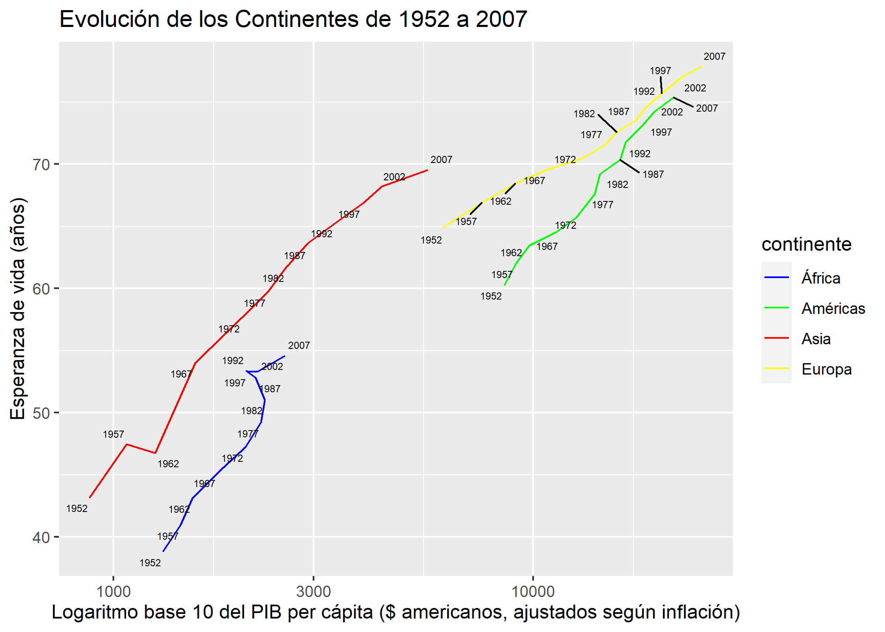

Capítol 4 Actividad guiada 1.5
---
title: "Actividad 1.5"
output: html_document
---library(knitr)
library(datos)
suppressPackageStartupMessages(library(tidyverse))
library(ggrepel)
knitr::opts_chunk$set(echo = TRUE)
paises_informe <- paises
# Recodifica Oceanía por Asia
paises_informe$continente[paises_informe$continente=="Oceanía"] <- "Asia"
# Elimina Oceanía de los levels
paises_informe$continente <- factor(paises_informe$continente)
# Paleta de colores
colores_continente <- c("blue","green", "red", "yellow")
names(colores_continente) <- c("África", "Américas", "Asia", "Europa")
# Etiquetas
etiquetas_paises <- c("España","China","Etiopía","Canadá")
# funcion describir
describir <- function(data, colores, etiquetas) {
# filtra paises con etiqueta
data_etiquetas <- data[data$pais %in% etiquetas, ]
# Agrega continentes
data_continente <- data %>%
arrange(continente, anio) %>%
mutate(esperanza_de_vida_total = esperanza_de_vida * poblacion
, pib_total = pib_per_capita * poblacion) %>%
group_by(continente, anio) %>%
dplyr::summarize(n_paises=n()
, esperanza_de_vida = sum(esperanza_de_vida_total ) /
sum(poblacion )
, pib_per_capita = sum(pib_total) /
sum(poblacion)
, poblacion = sum(poblacion))
resultados <- list()
resultados[["continentes"]] <- ggplot(data_continente, aes(x=pib_per_capita, y=esperanza_de_vida
, color=continente)) +
geom_path() +
scale_x_log10() +
scale_colour_manual(values = colores) +
geom_text_repel(aes(label=anio), size=2, color="black") +
labs(title="Evolución de los Continentes de 1952 a 2007"
, x = "Logaritmo base 10 del PIB per cápita ($ americanos, ajustados según inflación)"
, y = "Esperanza de vida (años)")
return(resultados)
}
resumen <- describir(paises_informe, colores_continente, etiquetas_paises)## `summarise()` regrouping output by 'continente' (override with `.groups` argument)4.0.1 Evolución de los continentes

Figura 4.1: Evolución continentes (Fuente: Elaboración propia con datos de Gapminder)
El gráfico muestra la traza que han recorrido los continentes en sus valores medios de PIB per cápita y Esperanza de vida. Se confirma la mayor progresión de Asia. Vemos que como América y Europa, en media tienen un comportamiento bastante paralelo. Se observa como el recorrido de África, aunque partiendo de valores muy inferiores, ha sido positiva y ha incrementado de forma similar el resto de continentes.